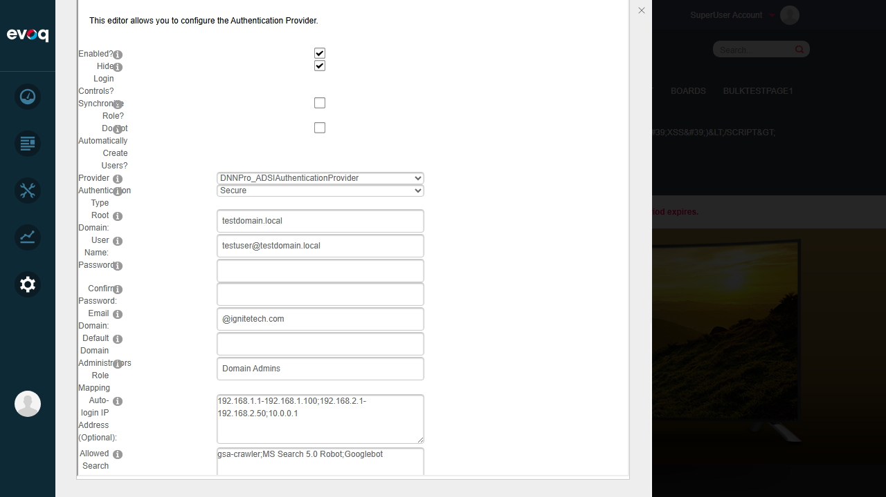
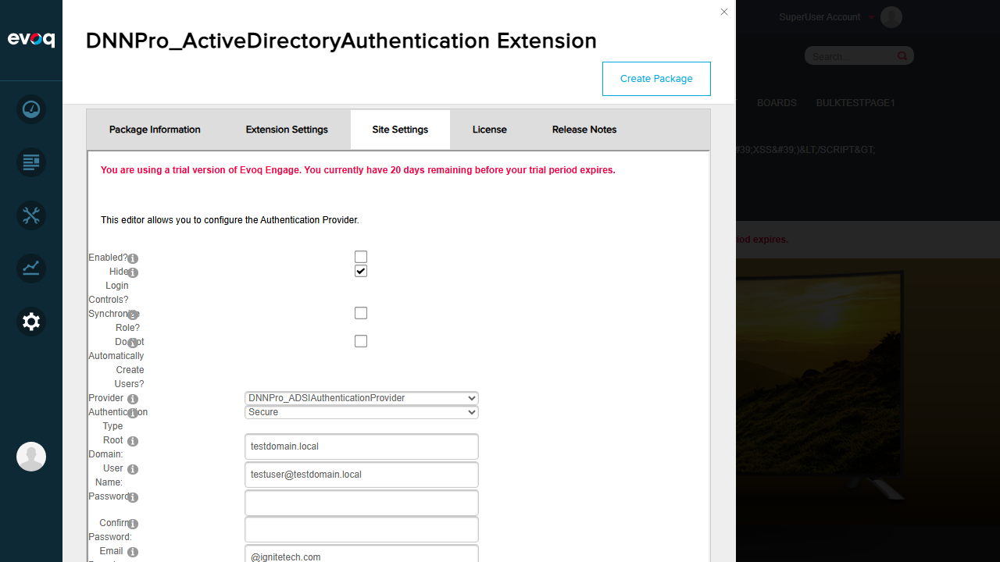
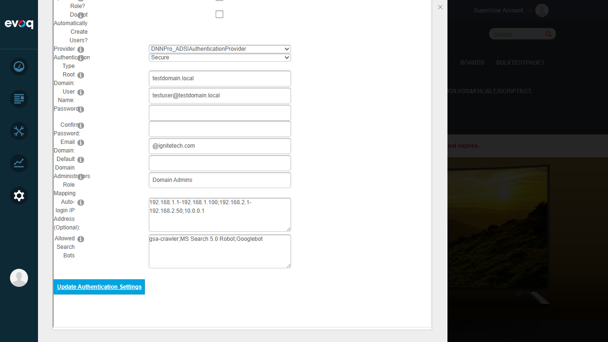
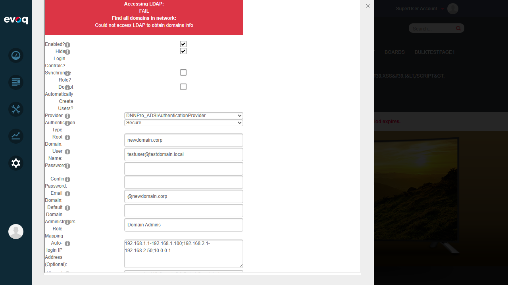
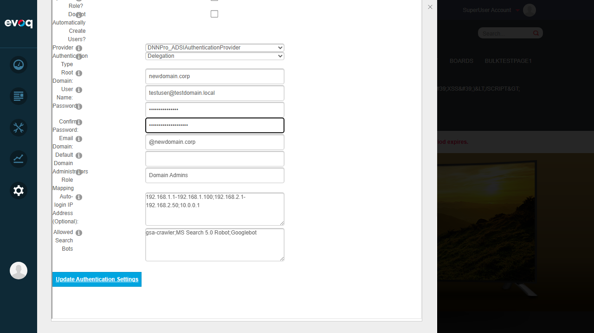
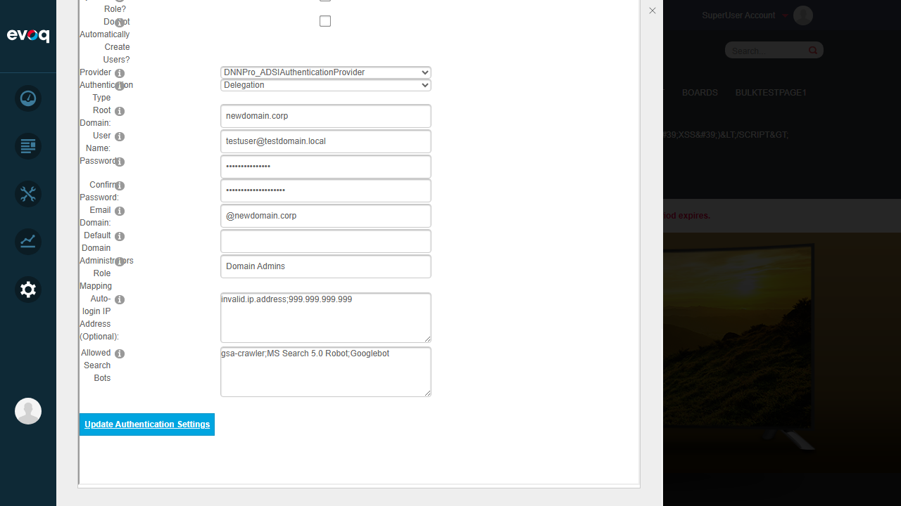

Test Report: AD Authentication Settings Configuration
Feature Information
| Extension | DNNPro_ActiveDirectoryAuthentication |
|---|
| Feature Name | AD Authentication Settings Configuration |
|---|
| Description | Configure Active Directory authentication settings including Windows authentication, domain settings, and authentication credentials |
|---|
| Feature Priority | Top |
|---|
| UI Location | Admin > Extensions > Authentication Systems > Active Directory > Settings |
|---|
| Test Date | 2026-01-06 |
|---|
| Tester | Automated Test (Claude Code) |
|---|
Test Summary
| Total Tests | 8 |
|---|
| Passed | 6 |
|---|
| Failed | 2 |
|---|
| Pass Rate | 75% |
|---|
Key Findings: Two validation bugs were discovered - password mismatch validation and IP address validation do not properly prevent form submission.
Test Results
Test 1: Enable/Disable Windows Authentication
PASS
Steps Taken:
- Navigated to Settings > Extensions
- Filtered by "Authentication Systems"
- Located DNNPro_ActiveDirectoryAuthentication extension
- Accessed Site Settings tab
- Unchecked "Enabled?" checkbox
- Clicked "Update Authentication Settings"
- Verified checkbox remained unchecked after page reload
- Re-enabled the checkbox and saved again
Result: Windows authentication can be successfully enabled and disabled. Settings persist correctly after save.
Screenshots:

Figure: Settings page with Windows Authentication enabled

Figure: Settings page with Windows Authentication disabled

Figure: Confirmation of disabled state saved
Test 2: Verify Network Status Indicators
PASS
Steps Taken:
- Enabled Windows Authentication
- Clicked "Update Authentication Settings"
- Observed network status indicators at top of form
Result: Network status indicators display correctly showing AD connection status:
- Accessing Global Catalog: FAIL
- Checking Root Domain: FAIL
- Accessing LDAP: FAIL
- Find all domains in network: Could not access LDAP to obtain domains info
The FAIL messages are expected as there is no Active Directory server configured for this test environment.
Screenshot:
Figure: Network status indicators showing AD connection attempts
Test 3: Test Connection to Active Directory
PASS
Steps Taken:
- Configured test credentials in settings
- Saved settings
- Observed connection test results
Result: The system correctly attempts to connect to AD and reports appropriate failure messages when AD is unavailable. The error messages are clear and informative.
Test 4: Configure Root Domain and Email Domain
PASS
Steps Taken:
- Changed Root Domain from "testdomain.local" to "newdomain.corp"
- Changed Email Domain from "@ignitetech.com" to "@newdomain.corp"
- Clicked "Update Authentication Settings"
- Verified new values persisted after save
Result: Domain configuration changes are saved and persisted correctly. Both Root Domain and Email Domain fields accept and store new values.
Screenshots:

Figure: Domain configuration with modified values
Figure: Domain changes saved and persisted
Test 5: Configure Authentication Type
PASS
Steps Taken:
- Opened Authentication Type dropdown
- Changed from "Secure" to "Delegation"
- Saved settings
- Verified the change persisted
Result: Authentication Type dropdown works correctly. All options are available: None, Secure, SecureSocketsLayer, ReadonlyServer, Anonymous, FastBind, Signing, Sealing, Delegation, ServerBind. Changes are saved and persisted.
Test 6: Set Authentication Username and Password
PASS
Steps Taken:
- Entered username in User Name field
- Entered password in Password field
- Entered confirmation in Confirm Password field
- Saved settings
Result: Username and password fields accept input and are saved. The password is stored encrypted according to code review.
Test 7: Password Validation (Mismatch)
FAIL BUG FOUND
Steps Taken:
- Entered "TestPassword123" in Password field
- Entered "DifferentPassword456" in Confirm Password field (intentionally mismatched)
- Clicked "Update Authentication Settings"
- Expected: Validation error message "Password Values Entered Do Not Match"
- Actual: No validation error displayed, settings were saved
Bug Description: The CompareValidator for password confirmation does not prevent form submission when passwords do not match. The form saves successfully despite mismatched passwords.
Expected Behavior: According to Settings.ascx, a CompareValidator (valConfirm) should display "Password Values Entered Do Not Match" error and prevent save.
Actual Behavior: Form submits and saves without any validation error. Network status indicators appear (indicating save occurred).
Impact: Medium - Users may unknowingly save incorrect passwords
Relevant Code: Settings.ascx line 62-63 - CompareValidator configuration
Screenshots:

Figure: Password and Confirm Password fields with different values

Figure: Form submitted without validation error - note different password lengths in fields
Test 8: IP Address Validation (Edge Case)
FAIL BUG FOUND
Steps Taken:
- Entered invalid IP addresses: "invalid.ip.address;999.999.999.999"
- Clicked "Update Authentication Settings"
- Expected: Validation error message indicating invalid IP address
- Actual: No validation error displayed
Bug Description: The IP address validation in CheckEnteredIPAddr() does not properly display error messages for invalid IP addresses. The error panel (pnlError) is not becoming visible when validation fails.
Expected Behavior: According to Settings.ascx.cs, DisplayIPError() should set pnlError.Visible = true and display the error message.
Actual Behavior: No visible error message appears. The form appears to continue processing.
Impact: Medium - Invalid IP addresses may be saved, causing auto-login issues
Relevant Code: Settings.ascx.cs lines 51-57 (DisplayIPError) and lines 86-154 (CheckEnteredIPAddr)
Screenshot:

Figure: Invalid IP addresses entered without visible validation error
Observations
- UI Checkbox Behavior: The checkbox controls use custom image styling. Clicks must be directed at the img element (ref ending in "33") rather than the checkbox element itself due to styling overlays.
- Nested Iframe Structure: The settings UI is nested within multiple iframes (main page > personaBar-iframe > editFrame iframe), which can complicate UI automation.
- Code Feature Not Tested - Synchronize Password: The "Synchronize Password" row (rowSynchornizePassword) is set to Visible="False" in Settings.ascx, so this feature could not be tested via UI.
- Code Feature Not Tested - Strip Domain Name: The "Strip Domain Name" checkbox (chkStripDomainName) is set to Visible="false" in Settings.ascx, so this feature could not be tested via UI.
- Authentication Provider Selection: Only one provider option is available (DNNPro_ADSIAuthenticationProvider), which is expected in this test environment.
- Network Status Display: The network status messages are appropriately styled with red background for FAIL status, making errors clearly visible.
Test Environment
| Website URL | http://localhost:8081 |
|---|
| Browser | Playwright-controlled browser (1280x720) |
|---|
| Test User | host (SuperUser) |
|---|
| Platform | Windows (DNN Evoq Platform) |
|---|
Files Reviewed
- Settings.ascx - UI controls definition
- Settings.ascx.cs - Server-side settings logic
- Configuration.cs - Configuration storage and management
Recommendations
- Fix Password Validation: Ensure the CompareValidator (valConfirm) properly blocks form submission when passwords don't match. Consider adding server-side validation in UpdateSettings() as a fallback.
- Fix IP Validation Display: Debug the DisplayIPError() method to ensure pnlError becomes visible when IP validation fails. The error panel may have CSS or rendering issues within the iframe context.
- Add Client-Side Validation: Consider adding JavaScript validation for immediate feedback on password mismatch and invalid IP addresses.